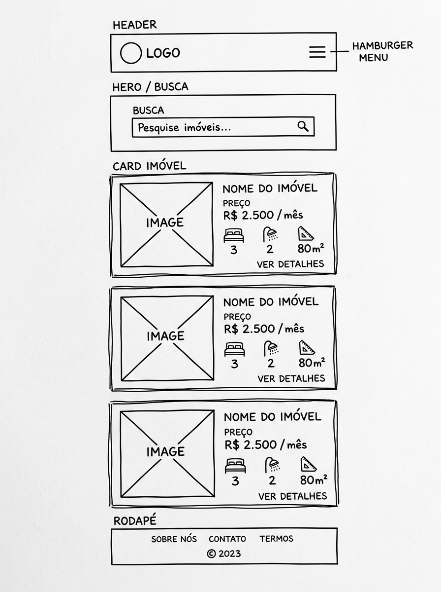
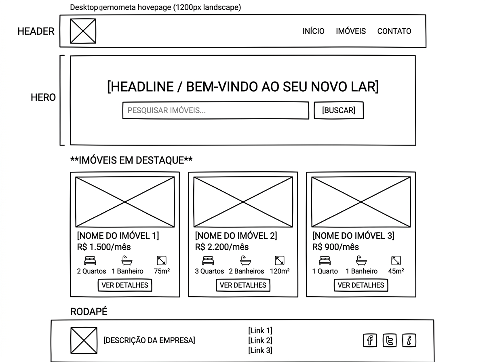

Nome do Site
AlugaFácil – Plataforma de Locação de Imóveis
O nome AlugaFácil foi escolhido por ser direto, memorável e imediatamente compreensível. A combinação de "Aluga" (verbo de aluguel) com "Fácil" transmite a proposta de valor central do site: encontrar um imóvel para alugar de forma simples e descomplicada. O nome é curto, fácil de digitar e adequado ao público brasileiro.
Disponibilidade de domínio (opcional):
alugafacil.com.br
Finalidade do Site
O AlugaFácil tem como objetivo ser uma plataforma digital para divulgação e consulta de imóveis residenciais disponíveis para locação. O site fornecerá:
- Listagem de imóveis disponíveis para alugar, com fotos, descrição e valores;
- Filtros por número de quartos, localização e faixa de preço;
- Modal de detalhes com informações completas de cada imóvel;
- Formulário de contato para solicitar visitas ou tirar dúvidas;
- Armazenamento de imóveis favoritos no navegador do usuário;
- Página informativa sobre o processo de locação e documentação necessária.
Cenários
Marcos está se mudando para uma nova cidade por conta de um novo emprego. Ele acessa o AlugaFácil para encontrar apartamentos de 2 quartos disponíveis por até R$ 2.500 por mês. Ele quer saber: "Quais imóveis de 2 quartos estão disponíveis para alugar na minha faixa de preço?"
Juliana encontrou um apartamento que gostou na listagem e quer agendar uma visita presencial. Ela acessa o site buscando resposta para: "Como faço para agendar uma visita ao imóvel que me interessou e quais documentos preciso apresentar para alugar?"
Pedro está comparando diferentes imóveis antes de tomar uma decisão. Ele usa o site para favoritar os imóveis preferidos e retornar para compará-los depois, perguntando-se: "Consigo salvar os imóveis que gostei para visualizar depois sem precisar buscar novamente?"
Esquema de Cores
As cores foram selecionadas para transmitir confiança, profissionalismo e acolhimento — valores essenciais em uma plataforma imobiliária.
#1A4F7A – Azul MarinhoUso: cabeçalho, barra de navegação, títulos principais e rodapé.
#27AE60 – Verde EsmeraldaUso: botões de ação, badges de disponibilidade, ícones de destaque e links ativos.
#F39C12 – ÂmbarUso: chamadas para ação secundárias, destaques e preços em evidência.
#F4F6F9 – Cinza ClaroUso: fundo geral das páginas e seções secundárias.
#2C3E50 – Cinza EscuroUso: parágrafos, listas, descrições e textos informativos gerais.
Tipografia
Fontes selecionadas no Google Fonts para garantir modernidade, clareza e boa legibilidade em telas de todos os tamanhos.
Uso: H1, H2, H3, navbar, botões e badges. Transmite modernidade e profissionalismo, sendo amplamente utilizada em plataformas digitais.
Uso: Parágrafos, listas, formulários, cards de imóveis e rodapé. Alta legibilidade em diferentes tamanhos de tela.
Mapa do Site
index.html
imoveis.html
contato.html
* A página de ação do formulário (form-action.html) não conta para o requisito das 3 páginas.
Wireframes – Página Inicial
Esboço esquemático do layout da página inicial para os modos de visualização móvel e desktop.
📱 Dispositivo Móvel (320px)

🖥️ Desktop / Tablet (1200px)
